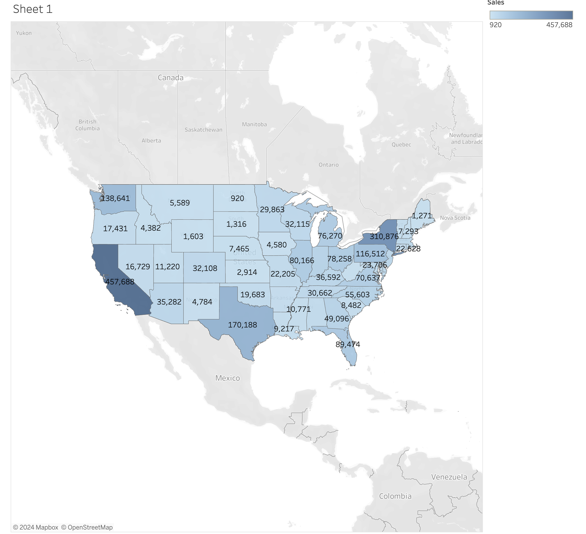
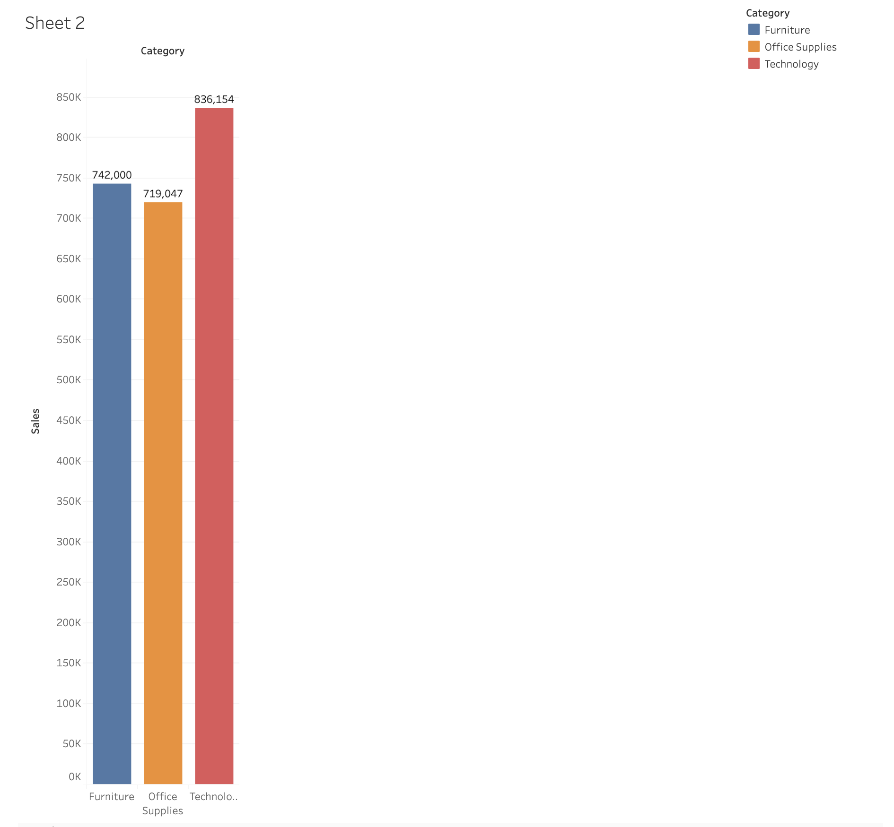
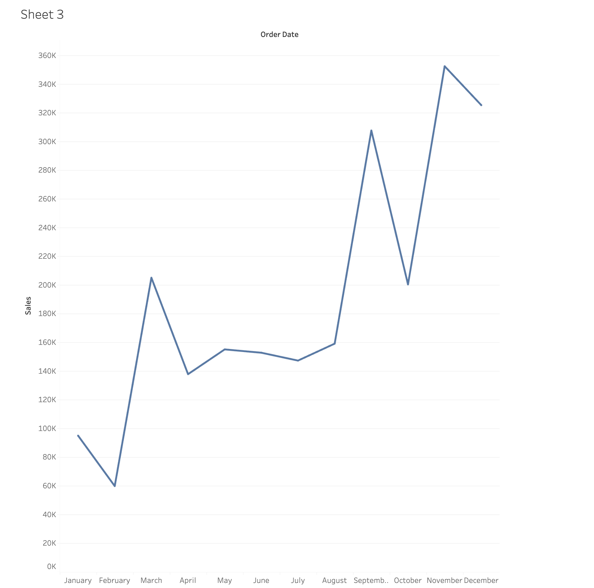
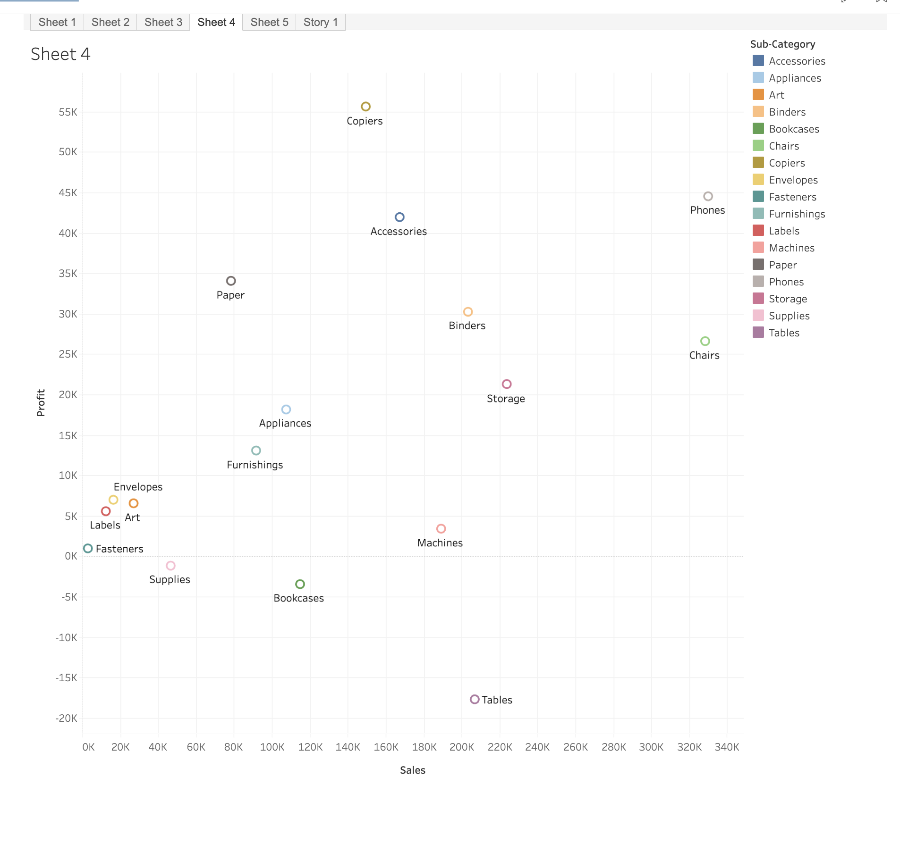
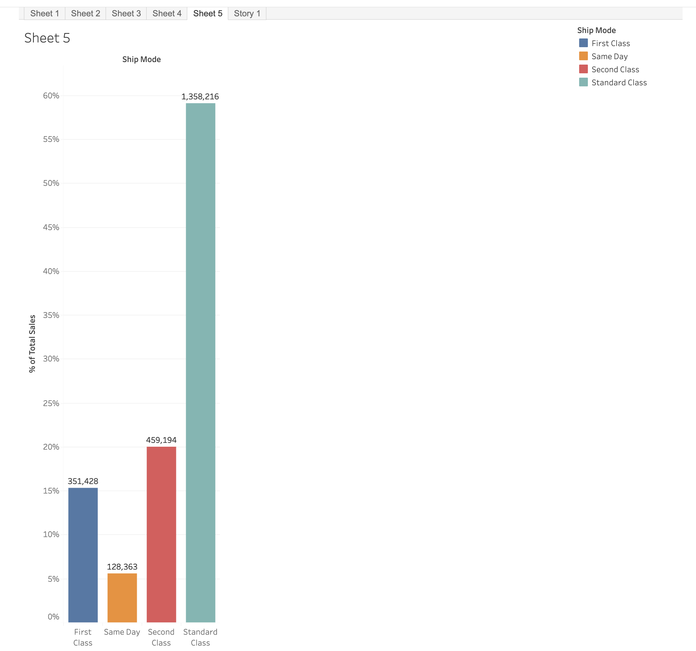

Tableau Data Analysis - Lab 4.1

What insights can you draw about sales concentration in different regions of the United States?
- The top 3 sales states are: CA, NY, TX
- The bottom 3 sales states are: ND, WV, SD
- The midwest shows low sales numbers whereas both West and East coast boast strong sales.

Which category has the highest sales, and which has the lowest? How does the performance of each category vary?
- The technology category had the highest sales
- The office supplies category had the lowest sales
- The spread between office supplies and technology is vast, but the spread between each category to the next highest isn't so big.

Are there any noticeable patterns, such as peak sales months or consistent seasonal trends?
- Peak sales months are November and December, clearly correlated to American consumerism during holiday season.

Are there any sub-categories with high sales but low profit, or vice versa?
- Tables and bookcases are sub-categories with high sales but low/negative profit.
- This may be due to materials cost associated with production (wood).

Which shipping mode generates the highest sales, and which generates the least?
- Standard class is the highest used shipping mode whereas same day is the least
- This can help the company know which air routes it needs to keep available, as well as how many resources to allocate for each mode.